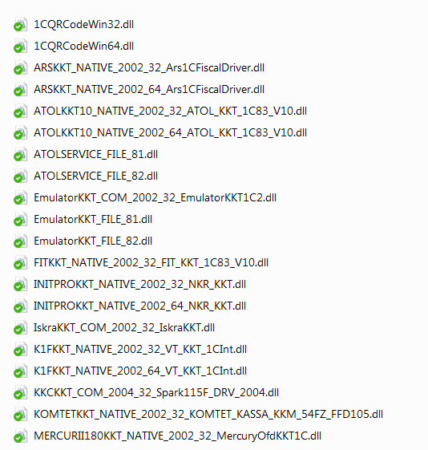
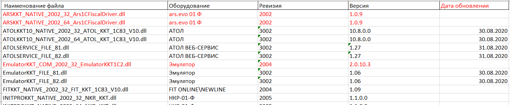
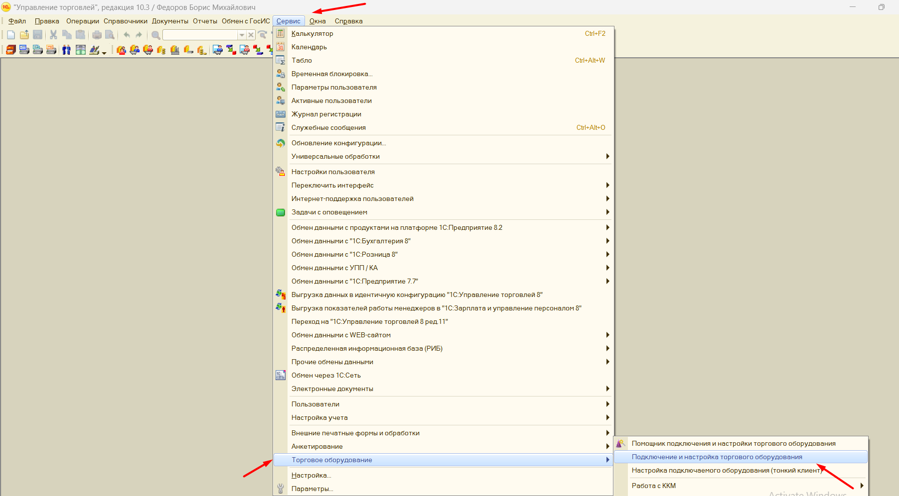
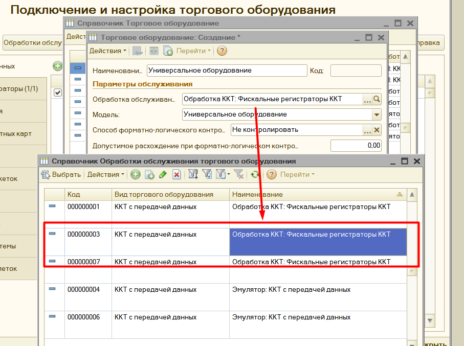
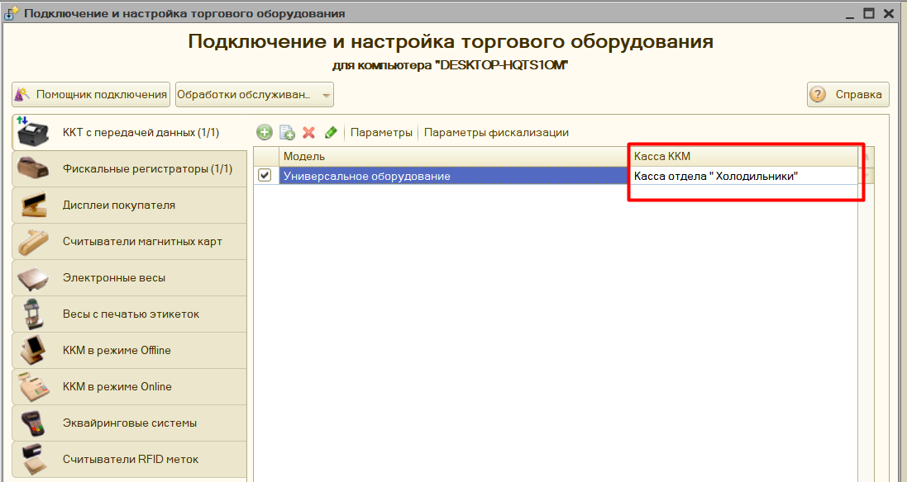
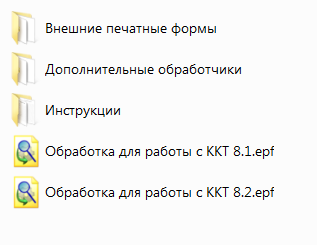
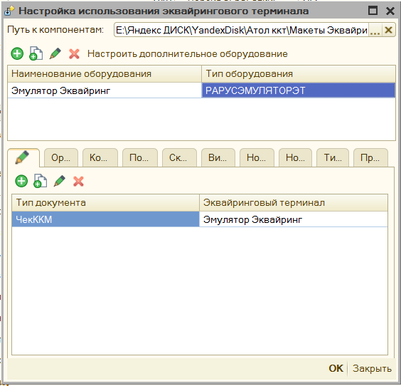
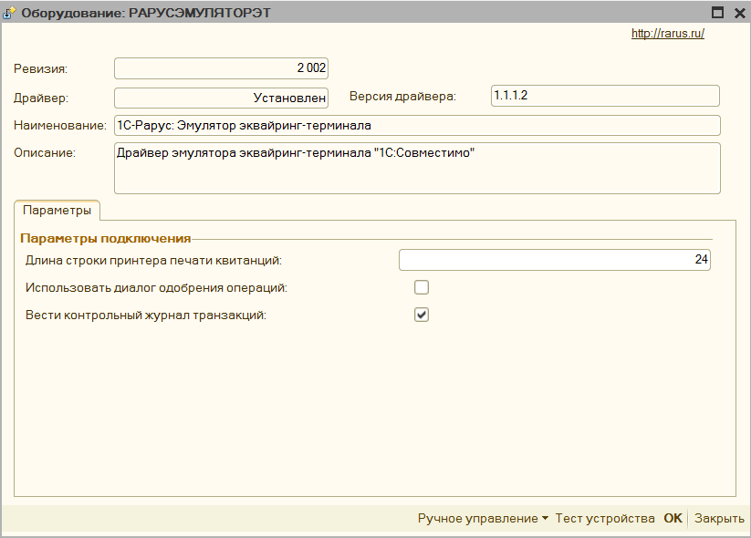
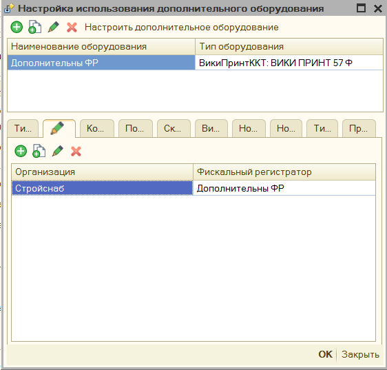
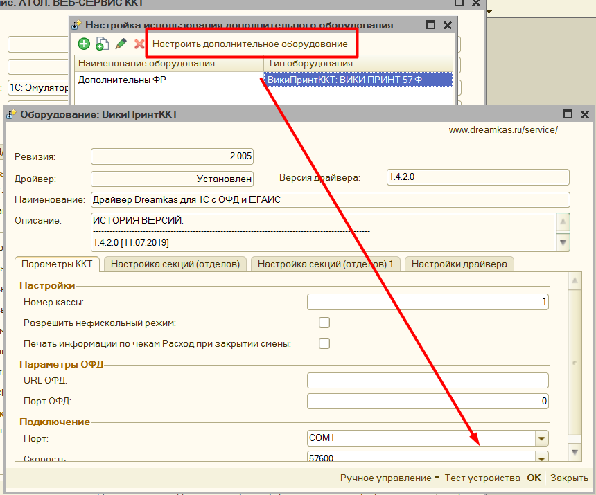

Подключение¶
-
Установите драйвера для вашего оборудования, их можно скачать с официального сайта производителя.
-
Добавить обработку в торговое оборудование, обработка подключается как «фискальный регистратор» или как «ККТ», если ваша программа поддерживает такой способ подключения. Для Альфа-Авто обработка подключается в справочнике "Оборудование". Подробнее
-
Нажмите "настроить параметры" и примите Лицензионное соглашение

- Откроется форма первоначальной настройки:

- укажите "модель оборудования", если вашей модели нет в списке, то просто выберите похожую.
- укажите "путь к компонентам ТО", если вы их уже скачали, либо нажмите на ссылку "Скачать компоненты оборудования" и скачайте компоненты для вашей операционной системы (Windows или Linux), и распакуйте их в доступный каталог, после этого выберите папку с ними в указанном поле.
- выберите вашу систему налогообложения - "по умолчанию"
- укажите тип лицензии, которую хотите активировать или "демо"
- если вы используете НДС 5% и 7%, то в списке компонент нужно выбирать те, что помечены "НДС", подробнее описано здесь
- если необходимо активировать лицензию, нажмите на "Получить ключ" и воспользуйтесь инструкцией для формы лицензирования
- если по каким-либо причинам при активации появляется ошибка, то можно нажать "Использовать COM компоненту для обертки NATIVE", которая будет использовать компоненту прослойку между обработкой и оборудованием
- нажмите "активировать" - откроется форма основных настроек обработки
Компоненты оборудования¶
Для печати фискальных чеков Обработка использует не собственный функционал, а компоненты от производителей этого оборудования, которые были специально разработаны для использования в 1С. Все компоненты расположены в каталоге "Путь к компонентам ТО" и скачиваются отдельно. Компоненты могут различаться:
- способом подключения - COM или NATIVE;
- форматом использования, так называемая ревизия интерфейса. >Чем выше ревизия, тем больше данных для передачи на оборудования компонента, а значит и обработка поддерживает. Наиболее актуальная на данный момент ревизия - 3003
- разрядностью компоненты - 32х или 64х битные. > Разрядность определяет на какой разрядности платформы 1С они могут работать, и какой разрядности драйвера должны быть установлены. В частности, версия платформы 1С 8.1 и 8.2, всегда 32-х битные, самые последние версии платформы 8.3 уже могут встречаться 64-х битные.
Для того, чтобы компоненты в каталоге можно было обновлять независимо от обработки, их нужно называть особым образом, чтобы программа их могла динамически считать:
[Наименование оборудования]_[Тип компоненты]_[Тип драйверов]_[Разрядность компоненты]_[Наименование драйвера в реестре]
Например, в наименовании компоненты ATOLKKT_COM_2001_32_ATOL_KKM_1C82_54FZ. Наименование оборудования: ATOLKKT, Тип компоненты: COM, Тип драйверов: 2001, Разрядность компонентыС: 32х битная, наименование драйвера в реестре: ATOL_KKM_1C82_54FZ

Вы можете добавить свои компоненты, если сформируете их наименование по данному шаблону. Если модели оборудования нет в списке поддерживаемых, то помимо компоненты ее нужно будет еще добавить в обработку, добавив строку в макет "Список моделей"

Основные поддерживаемые компоненты собраны в одном каталоге, и их можно скачать по ссылке, также в этом каталоге находится "Дайджест компонент", где содержится информации о дате обновления компоненты, поддерживаемой операционной системе и поддерживаемом формате.

Что такое ревизия драйвера?¶
Периодически при использовании описания компонент работы с торговым оборудованием, используется слово "Ревизия" интерфейса или драйвера. Данным словом описывается какую функциональность поддерживает та или иная компонента, например, поддержка ФФД 1.2 появилась с ревизии 3.4, в обработка она отображается как 3004. Ревизию определяет фирма 1С, выдвигая определенные требования к производителям торгового оборудования, таким образом заявляя, если вы хотите работать с нами, то вы должны поддерживать следующий функционал. Требования описаны на ИТС в разделе "Требования к разработке драйверов". Чем выше ревизия - тем больше возможностей компонента и обработка будут поддерживать.
Однако надо учитывать, что компоненты с более высокой ревизией могут потребовать новее драйвера, а возможно и прошивку для вашего оборудования. Чтобы увидеть какой ревизии ваша компонента, надо зайти в параметры обработки, Она отображается на первой закладке "Системные параметры" в одноименной поле.

Далее указанную ревизию можно проверить на актуальность, для этого можно открыть "дайджест компонент" и найти нужную комоненту для вашего оборудования, в колонке "ревизия" будет указана актуальная ревизия для данных драйверов, если нужную компоненту не получилось найти, то возможно она перемещена на лист "Сняты с поддержки"
Особенность подключения 8.1¶
Для корректной работы с компонентами Native на платформе 8.1 необходимо дополнительно зарегистрировать 2 компоненты. Они находятся в каталоге с другими компонентами, и называются WrapperNative.dll и UniversalNativeWrapper.dll. Зарегистрировать их нужно через командную строку командой regsvr32. Данные компоненты работают как обертка для Native компонент, без их регистрации не будет работать печать QR кодов, и драйвера оборудования, работающие через Native, например, АТОЛ.
Примечание: NATIVE компоненты – это такие dll, использующие внутренний формат 1С, что позволяет их не регистрировать как компоненты com
Пример: Как зарегистрировать компоненту
Особенность подключения Linux¶
Для корректной работы обработки на Linux необходимо скачать вместо «Макеты компонент для Windows» «макеты компонент для Linux», в остальном же способ подключения и активации точно такой же.
Особенность подключения Рарус¶
Инструкция по подключению обработки в Рарус
Особенность подключения Далион¶
Если вы хотите встроить обработку для работы онлайн кассами так, чтобы можно было печатать чеки прямо из документов, то нужно скачать «комплект интеграции Далион» и подключить его по этой видео инструкции
Особенность подключения УТ 10.2¶
Для конфигурации Управление торговлей 10.2 нет типового способа подключить обработку для печати прямо из документов, поэтому необходимо скачать «Комплект интеграции УТ 10.2» и доработать конфигурацию по этой видео инструкции.
Обратите внимание хоть перечисленные конфигурации и требуют комплект интеграции, использовать обработку можно и без них. Для этого откройте обработку через «Файл» - «Открыть». Откроется окно «формы отладки», в ней можно добавить новое подключение к оборудованию, и печатать чеки по кнопке «Напечатать фискальный чек» - «Предопределенный»
Особенность подключения Управление торговлей 10.3¶
Обратите внимание, данная инструкция применима также для конфигурации Комплексная автоматизация 1 и Управление производственным предприятием 1.3.
Подключение устройства к программе производится в обработке Подключение и настройка торгового оборудования (интерфейс Полный, меню Сервис - Торговое оборудование) на закладке ККТ с передачей данных. 
Пользователю необходимо создать новый элемент справочника Торговое оборудование, указав обработку обслуживания с типом оборудования ККТ с передачей данных и модель оборудования, а также заполнить поле Наименование.

Далее необходимо указать кассу ККМ организации, в которой будет производиться продажа товаров на данном фискальном устройстве.

Структура архива с обработкой¶

Архив с обработкой состоит из следующих файлов:
-
«Обработка для работы с ККТ 8.2.epf» - Основная обработка для платформы 1С 8.2 (также подходит для платформы 8.3, но только для обычных форм)
-
«Обработка для работы с ККТ 8.1.epf» - Основная обработка для платформы 1С 8.1
-
«Дополнительные обработчики\KKT_DEVELOPE_8_2.epf» - обработка для платформы 8.2 или 8.3, в которую можно внести свой код и подключить к основной обработке, для изменения функционала печати.
-
«Дополнительные обработчики\KKT_DEVELOPE_8_1.epf» - обработка для платформы 8.1, в которую можно внести свой код и подключить к основной обработке, для изменения функционала печати.
-
«Внешние печатные формы\ВПФ_Чек_8_1.epf» - обработка для платформы 8.1, является внешней печатной формой, подключается к выбранном документу, через типовой механизм подключения внешних печатных форм. Таким образом можно добавить функционал печати чеков для тех документов, что его не поддерживают.
-
«Внешние печатные формы\ВПФ_Чек_8_2.epf» - для платформы 8.2 или 8.3, является внешней печатной формой, подключается к выбранном документу, через типовой механизм подключения внешних печатных форм. Таким образом можно добавить функционал печати чеков для тех документов, что его не поддерживают.
-
«Внешние печатные формы\ВПФ_ЧекКоррекции_8_2.epf» - для платформы 8.2 или 8.3, является внешней печатной формой, подключается к выбранном документу, через типовой механизм подключения внешних печатных форм. Таким образом можно добавить функционал печати чека коррекции для тех документов, что его не поддерживают.
-
«Внешние печатные формы\ВПФ_ЧекКоррекции_8_1.epf» - обработка для платформы 8.1, является внешней печатной формой, подключается к выбранном документу, через типовой механизм подключения внешних печатных форм. Таким образом можно добавить функционал печати чека коррекции для тех документов, что его не поддерживают.
Как обновить ранее приобретенную программу?¶
Обновления на программу привязаны к сроку технической поддержки. Если техническая поддержка активна, либо требуется перейти на последнюю доступную версию, то это можно сделать так:
- Скачайте обновленную обработку, это можно сделать:
- на сайте, где приобреталась программа
- через параметры программы по кнопке "Ручное управление" - "Скачать обработку" и выбрав актуальную версию.
- либо, если параметры недоступны, то открыв обработку, через меню "Файл"- "открыть". В появившемся окне нажать "Лицензирование" - "Скачать обработку"
- Помимо обработки также необходимо скачать и актуальные компоненты. Необходимость обновления компонент связана с тем, что обычно последняя версия программы требуется при изменении законодательства, либо прошивки фискального регистратора, и такая поддержка есть только в новых компонентах.
- После этого необходимо заменить вашу старую обработку на новую, предварительно нужно распаковать архив, в котором расположена новая версия программы:
-
если конфигурация Управление торговлей 10.3 или похожие:
- откройте справочник "Обработки обслуживания торгового оборудования";
- найдите в списке старую обработку;
- в форме объекта нажмите "открыть файл" и выберите новую версию в каталоге, при этом обновится номер версии в поле "Версия" справочника;
- перезапустите 1С, чтобы обновился кэш настроек;
- откройте параметры программы и заново их сохраните, при этом новые поля настроек сохранятся по умолчанию;
- перезапустите 1С еще раз.
-
если конфигурация Рарус (Альфа-Авто и т.д)
- Откройте справочник оборудование, найдите там оборудование с моделью "универсальное оборудование";
- В форме объекта на закладке "Внешняя обработка" нажмите на значок "Папка" и выберите новую версию программы в каталоге;
- Нажмите "настроить параметры" и заново их сохраните, при этом новые поля настроек сохранятся по умолчанию;
- Сохраните изменения в справочнике и перезапустите 1С (подробнее)
Подключение эквайринговых терминалов¶
В обработку можно подключить эквайринговый терминал, минуя стандартный способ подключения. Для этого в форме настройки нужно заполнить «Путь к компонентам», где указывается путь к компонентам эквайринга, данные компоненты можно скачать там же, где была загружена основная обработка.

Для подключения эквайринга, нужно выбрать тип оборудования из списка, и указать произвольное наименование. Затем нажать «Настроить дополнительное оборудование», в открывшейся форме указать параметры подключения эквайринга. После этого можно проверить подключение по кнопке «Тест устройства». Также в данной форме по кнопке «Ручное управление» можно снять «Итоги дня по картам».

Когда подключение успешно, то необходимо будет указать условие, когда применять эквайринговый терминал для этого см. Механизм распределения
Подключение дополнительного оборудования¶
К обработке помимо основного фискального регистратора можно подключить и дополнительные, данный функционал можно использовать, когда необходимо, например, разделить акцизный товар с обычным и пробивать его по другой кассе, либо есть другой фискальный регистратор, зарегистрированный на другую организацию. Для этого добавьте новую строку, укажите тип оборудования и произвольное наименование.

Нажмите на кнопку «Настроить дополнительное оборудование», откроется окно аналогичное форме с параметрами основного фискального регистратора, однако в нем будут только параметры для физического подключения оборудования, значения остальных полей будут браться из настроек основного оборудования.

Для настройки распределения фискальных регистраторов по чекам см. Механизм распределения